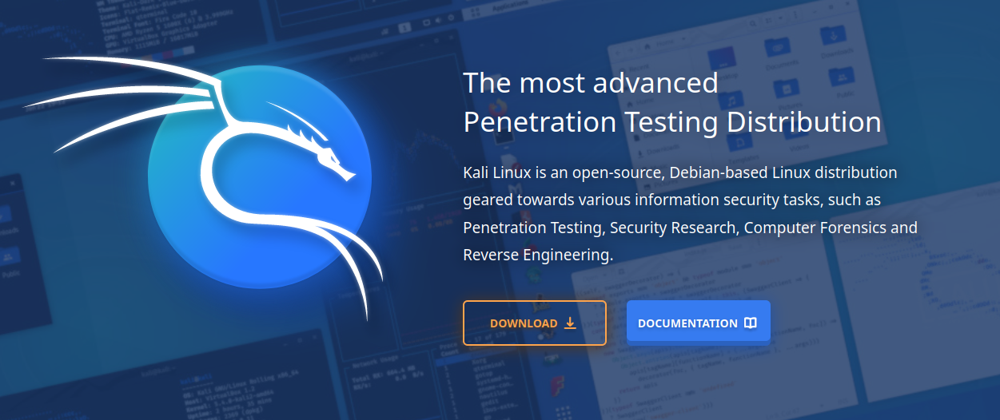
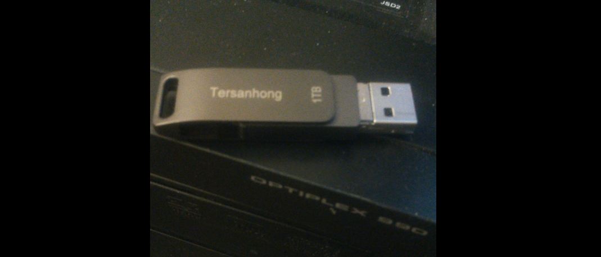
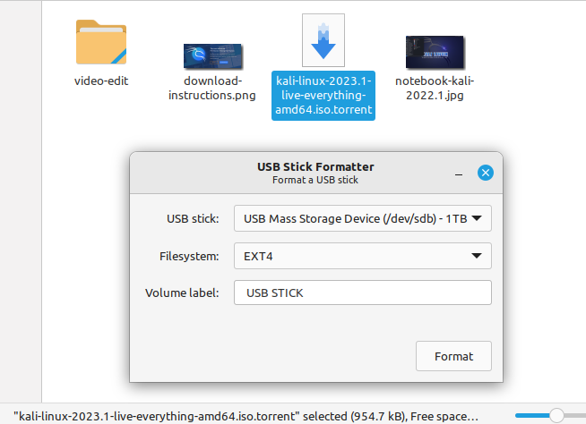
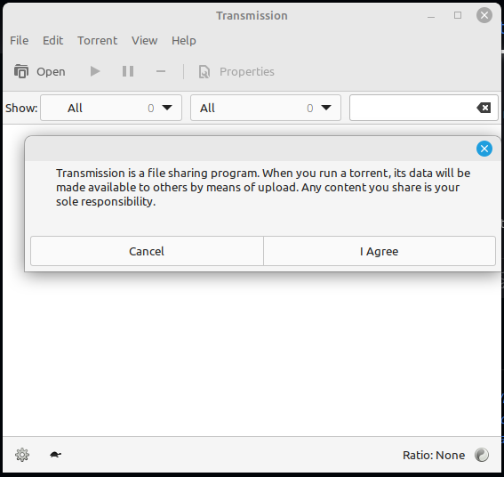
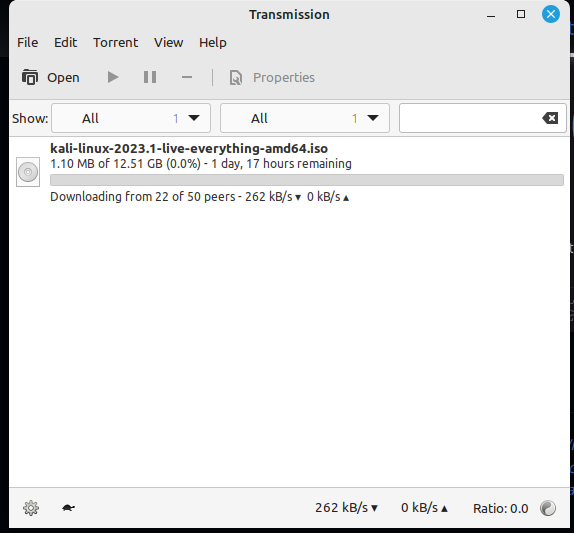
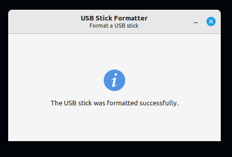
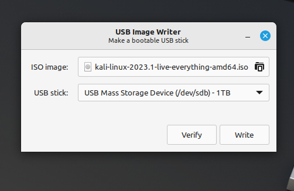
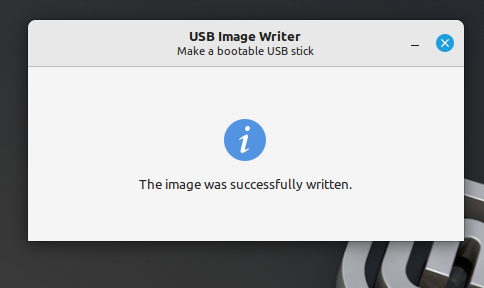

Let's Make a Kali Linux Flash Drive Using Ubuntu or Mint
With this method, you can keep a Kali Linux thumb drive to boot any PC without changing your current OS.
Introducton

What you need

Format the flash drive using the USB Stick Formatter tool

Download the torrent

Download the ISO from the torrent


Use the USB write tool to write image to drive

